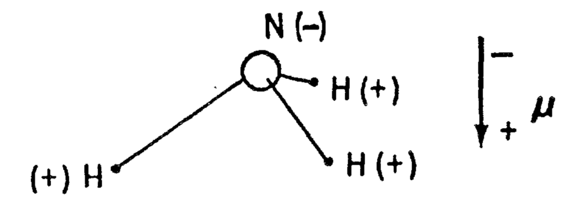
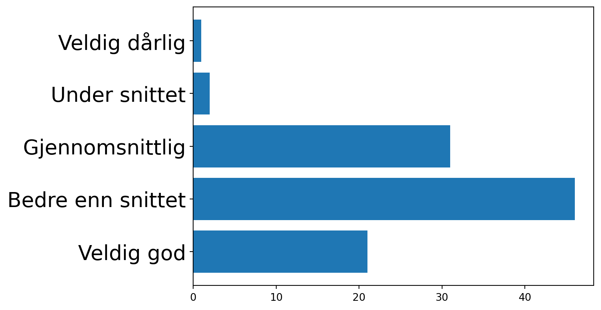
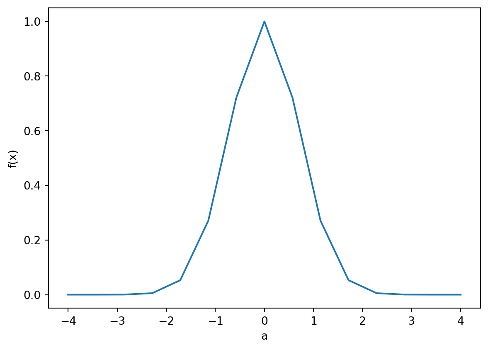
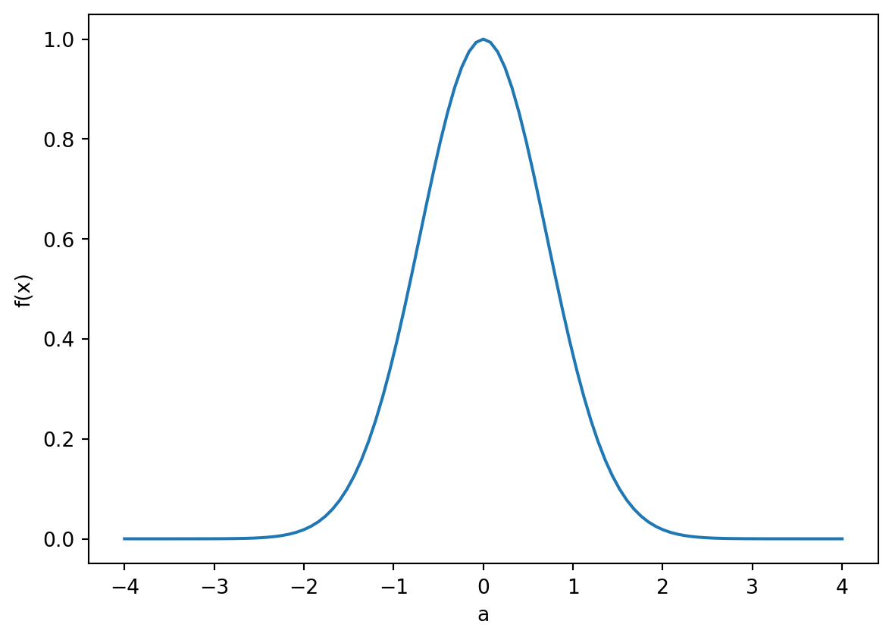
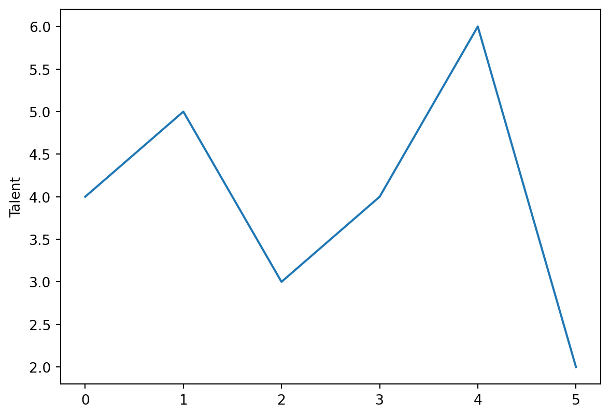
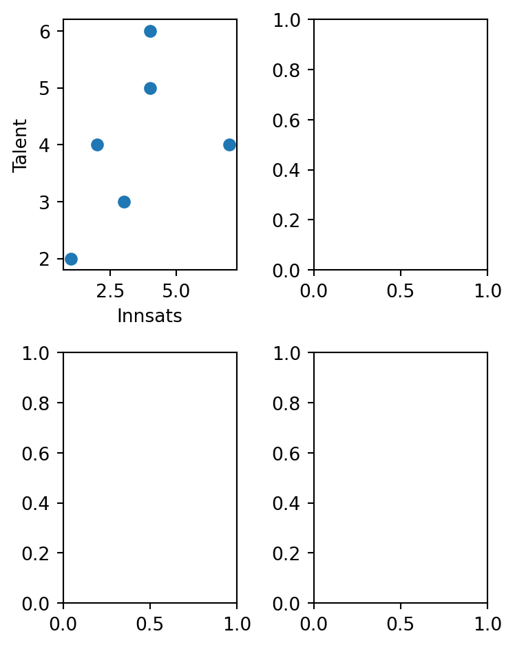

import matplotlib.pyplot as plt
import pandas as pd
ferdighetsnivå = ["Veldig god", "Bedre enn snittet", "Gjennomsnittlig", "Under snittet", "Veldig dårlig"]
andel = [21, 46, 31, 2, 1]
plt.barh(ferdighetsnivå, andel)
plt.tick_params(axis='y', labelsize=20) Forelesningsnotat
Slide-versjon
Data-dreven?
I dag:
- Eksempler på problemstillinger som trenger data
- Kunne lese inn og utforske datasett i jupyter notebook m/numpy, pandas og matplotlib

Praktisk info
- Undervisning på fredager 08:15–10:00
- 1 oblig (frist om en god stund)
- 2 prosjekter
- Muntlig eksamen
- Nettressurser lenket fra emnesiden. Disse endres gjennom semesteret
Undervisere
Aksel Sterri (Digital etikk)
- PhD i filosofi
- Forskningsdirektør i tenketanken Langsikt

Plan for semesteret
Statistikk og databehandling (januar-februar)
- Forstå og anvende sentrale konsepter innen statistikk (Lineær og logistisk regresjon, Beslutningstrær)
- forstå, bearbeide, analysere og visualisere datasett av moderat størrelse på en informert måte, samt trekke etterprøvbare konklusjoner
Digital etikk (mars)
- vurdere etiske utfordringer med KI-algoritmer
- se hvordan opprinnelsen til et datasett legger føringer og begrensninger på hva man kan bruke datasettet til
Prosjektoppgave (mars-mai)
- Jobbe med prosjekt i tverrfaglige team og kommunisere resulatene muntlig og skriftlig
Husk
- Hjelp hverandre (skal vi sette opp grupper?)
- Følg med på semestersidene
- Studentrepresentanter
- Still gjerne spørsmål etter timen
- Send mail om det er noe
More is different

SHOT
Omtrent 4 av 10 studenter (42 %) oppgir at de har god eller svært god livskvalitet. Samtidig vurderer 31 % av studentene sin livskvalitet som litt under middels eller dårligere
Bør vi sette inn tiltak?
Studenter flest mener de har det bedre enn snittet (!)
Sjåfører

Hva så?
- Henger dette på greip?
- Kan dette i prinsippet henge på greip?
- Kom med en hypotese basert på dette datasettet.
- Hvilke data trenger du å samle inn for å vurdere hypotesen din?
Å kunne håndtere data med Pandas

Aritmetikk i jupyter notebook
(Prøv å kjøre dette i egen notebook, meld ifra med postitlapp om det ikke er mulig å holde følge)
a = 3
b = 4
c = a*b
print("a*b = %i"%(a*b))a*b = 12Legge til ny/fjerne celle
Kommer an på VSCode/jupyter notebook/juyter lab


Legg til en ny celle i din notebook
Bruke celle til tekst (inkl. latex)
- Sette celletype til “Markdown”
Markdown-celle
Her kan jeg skrive tekst-innhold, likninger og slikt.
$\int_0^\infty f(x) dx$
Markdown-celle
Her kan jeg skrive tekst-innhold, likninger og slikt. \(\int_0^\infty f(x) dx\)
Installere pakker i Jupyter
!pip install <pakkenavn>
!pip install matplotlib. . .
- Legge på
-q(quiet) for å ikke spamme output-cellen
!pip install -q matplotlib. . .
- Med følgende får vi gjort mye:
!pip install -q matplotlib numpy pandasImportere pakker
import numpy as np
import matplotlib.pyplot as plt
import pandas as pd. . .
Feilmeldinger?
Funker installasjon og import av disse pakkene? Opp med grønn/rød postit!
Håndtere data i python/jupyter
- Lagre data i numpy-arrayer
- Plotte data med matplotlib
- Håndtere data med pandas DataFrames
Numpy-arrayer
(trenger ikke kode med her)
import numpy as np
a = np.array([2, 3, 4, 5])
b = np.linspace(0, 4, 10)
display(b)array([0. , 0.44444444, 0.88888889, 1.33333333, 1.77777778,
2.22222222, 2.66666667, 3.11111111, 3.55555556, 4. ])def f(x):
return np.exp(-x**2)
a = np.linspace(-4, 4, 15)
y = f(a)
display(y)array([1.12535175e-07, 7.84917568e-06, 2.84930489e-04, 5.38310574e-03,
5.29305019e-02, 2.70868328e-01, 7.21422290e-01, 1.00000000e+00,
7.21422290e-01, 2.70868328e-01, 5.29305019e-02, 5.38310574e-03,
2.84930489e-04, 7.84917568e-06, 1.12535175e-07])Plotting med matplotlib
import matplotlib.pyplot as plt
plt.plot(a, y)
plt.xlabel("a")
plt.ylabel("f(x)")Text(0, 0.5, 'f(x)')
Matplotlib
Oppgave
Kan du få plottet til å bli glattere?
import matplotlib.pyplot as plt
import numpy as np
def f(x):
return np.exp(-x**2)
a = np.linspace(-4, 4, 15)
y = f(a)
plt.plot...
plt.xlabel...
plt.ylabel...import matplotlib.pyplot as plt
a = np.linspace(-4, 4, 101)
y = f(a)
plt.plot(a, y)
plt.xlabel("a")
plt.ylabel("f(x)")Text(0, 0.5, 'f(x)')
import matplotlib.pyplot as plt
a = np.linspace(-4, 4, 101)
y = f(a)
plt.plot(a, y)
plt.xlabel("a")
plt.ylabel("f(x)")Text(0, 0.5, 'f(x)')
Lage Pandas DataFrame manuelt
Når vi skal jobbe med data som passer på tabellformat kan livet vårt bli svært mye enklere om vi brukere et bibliotek som heter pandas. Det skal da lite kode til for å lese inn filer og for å gjøre enkle plots. Dessuten passer dataformatet i pandas sammen med flere kjente maskinlæringsbiblioteker som pytorch og scikit-learn. Dermed slipper vi å bruke tid på å manipulere data til å passe inn i spesifikke formater for hvert bibliotek vi skal bruke.
Når man bruker kraftige biblioteker for databehandling, vil det alltid være mange funksjoner man ikke kan navnet på, eller ikke vet hva gjør. Det er helt greit, og helt vanglig. Det er lov til å si at man “kan pandas” uten å vite hva alle funksjonene gjør, på samme måte som det er lov å si man kan engelsk selv om man ikke vet betydningen av floccinaucinihilipilification. Derfor kommer det til å være mange ting jeg ikke vet om pandas, men jeg føler meg ganske komfortabel med å bruke det allikevel.
Det viktigste konseptet i pandas er et DataFrame. Det lager vi på denne måten, og det er en type tabell.
import pandas as pd
df = pd.DataFrame({
"talent" : [4, 5, 3, 4, 6, 2],
"innsats" : [2, 4, 3, 7, 4, 1],
"resultat" : [24, 73, 25, 204, 93, 4]
})
print(df) talent innsats resultat
0 4 2 24
1 5 4 73
2 3 3 25
3 4 7 204
4 6 4 93
5 2 1 4
Oppgave
Skriv inn dette i notebooken din, og kjør koden (vi trenger det etterpå)
Plotte fra DataFrame
plt.plot(df["talent"])
_ = plt.ylabel("Talent")
Flere plots i samme figur
fig, axes = plt.subplots(2,2, figsize=(4,5))
axes[0,0].scatter(df["innsats"], df["talent"])
axes[0,0].set_xlabel("Innsats")
axes[0,0].set_ylabel("Talent")
plt.tight_layout()
Oppgave
Fullfør plottet og finn ut hva som er viktigst av innsats og talent.
Laste inn fra fil
import pandas as pd
df_pris = pd.read_csv("data/meteringvalues-dec-2024.csv", sep=";", decimal=",")
print(df_pris) Fra Til KWH 60 Forbruk Kvalitet
0 01.12.2024 00:00 01.12.2024 01:00 4.908 Avlest
1 01.12.2024 01:00 01.12.2024 02:00 2.641 Avlest
2 01.12.2024 02:00 01.12.2024 03:00 3.378 Avlest
3 01.12.2024 03:00 01.12.2024 04:00 2.637 Avlest
4 01.12.2024 04:00 01.12.2024 05:00 2.633 Avlest
.. ... ... ... ...
739 31.12.2024 19:00 31.12.2024 20:00 3.269 Avlest
740 31.12.2024 20:00 31.12.2024 21:00 3.382 Avlest
741 31.12.2024 21:00 31.12.2024 22:00 3.147 Avlest
742 31.12.2024 22:00 31.12.2024 23:00 3.087 Avlest
743 31.12.2024 23:00 01.01.2025 00:00 4.490 Avlest
[744 rows x 4 columns]Ting kan gå galt
import pandas as pd
df_pris = pd.read_csv("data/meteringvalues-dec-2024.csv")
print(df_pris) Fra;Til;KWH 60 Forbruk;Kvalitet
01.12.2024 00:00;01.12.2024 01:00;4 908;Avlest
01.12.2024 01:00;01.12.2024 02:00;2 641;Avlest
01.12.2024 02:00;01.12.2024 03:00;3 378;Avlest
01.12.2024 03:00;01.12.2024 04:00;2 637;Avlest
01.12.2024 04:00;01.12.2024 05:00;2 633;Avlest
... ...
31.12.2024 19:00;31.12.2024 20:00;3 269;Avlest
31.12.2024 20:00;31.12.2024 21:00;3 382;Avlest
31.12.2024 21:00;31.12.2024 22:00;3 147;Avlest
31.12.2024 22:00;31.12.2024 23:00;3 087;Avlest
31.12.2024 23:00;01.01.2025 00:00;4 49;Avlest
[744 rows x 1 columns]Ting kan gå galt 2
import pandas as pd
df_pris = pd.read_csv("data/meteringvalues-dec-2024.csv", sep=";")
print(df_pris) Fra Til KWH 60 Forbruk Kvalitet
0 01.12.2024 00:00 01.12.2024 01:00 4,908 Avlest
1 01.12.2024 01:00 01.12.2024 02:00 2,641 Avlest
2 01.12.2024 02:00 01.12.2024 03:00 3,378 Avlest
3 01.12.2024 03:00 01.12.2024 04:00 2,637 Avlest
4 01.12.2024 04:00 01.12.2024 05:00 2,633 Avlest
.. ... ... ... ...
739 31.12.2024 19:00 31.12.2024 20:00 3,269 Avlest
740 31.12.2024 20:00 31.12.2024 21:00 3,382 Avlest
741 31.12.2024 21:00 31.12.2024 22:00 3,147 Avlest
742 31.12.2024 22:00 31.12.2024 23:00 3,087 Avlest
743 31.12.2024 23:00 01.01.2025 00:00 4,49 Avlest
[744 rows x 4 columns]Hente ut kolonner
df_pris = pd.read_csv("data/meteringvalues-dec-2024.csv", sep=";", decimal=",")
df_pris["KWH 60 Forbruk"]0 4.908
1 2.641
2 3.378
3 2.637
4 2.633
...
739 3.269
740 3.382
741 3.147
742 3.087
743 4.490
Name: KWH 60 Forbruk, Length: 744, dtype: float64Plotting
Oppgave
Last ned datasettet med strømforbruk (finnes under oppgavene på kursnettsiden) Plott kolonnen “KWH 60 Forbruk”
Starthjelp:
import pandas as pd
df_pris = pd.read_csv("data/meteringvalues-dec-2024.csv",
sep=";",
decimal=",")Om du blir ferdig, start på oppgave 2 fra øvingsoppgavene.
Til neste uke
- Gjør oppgavene som vi har gitt dere
- Gjør forberedelsene som vi har satt opp
Hvor mye tid tar HON2200 per uke?
6–7 timer?